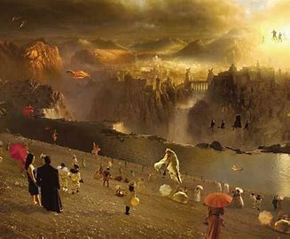
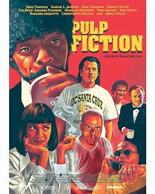
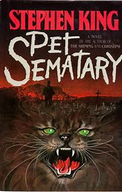

What Dreams May Come
This is visually gorgeous film that touches on themes of family, love, and death.
Pulp Fiction
As with any Quentin Tarantino film, the dilogue in this film is riveting, and the chaotic scenes that unfold keep you glued to the screen.
Stephen King's Pet Semetary
Frightening, though I do prefer the book to the movie.
Mean Girls
Fun, campy, a total classic.